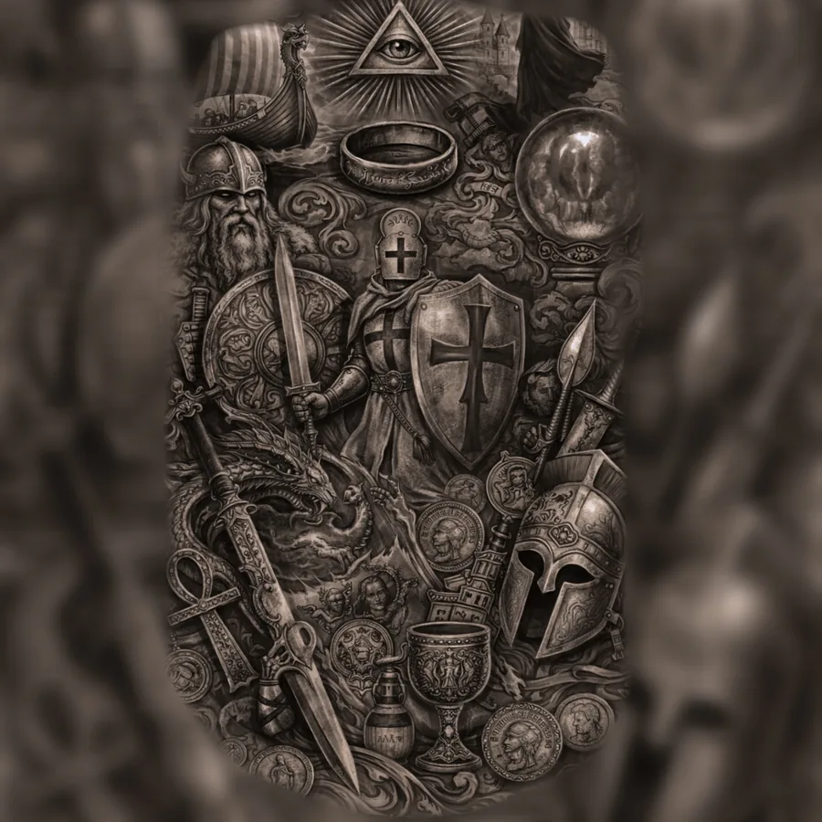

Archive Coin Study
A demonstration object page showing how numismatic material can be framed through evidence, condition and provenance rather than commodity-grid treatment.
Availability: Prototype only
Inspect Object

The Vault
Objects should be evaluated in context: history, condition, provenance, scarcity and the meaning of the transaction.
A demonstration object page showing how numismatic material can be framed through evidence, condition and provenance rather than commodity-grid treatment.

A demonstration acquisition state separating certificate data, physical evidence and valuation purpose.

Reserved as a future module. The presentation demonstrates how high-context objects can be given space, evidence and historical weight.

Designed to demonstrate broader category expansion without pretending the v1 intelligence engine already covers every collectible class.
Transaction design
Accessible material may use conventional purchase flow. Curated mid-tier objects can use Request Acquisition. Exceptional objects may justify private acquisition discussion or POA.
The point is not to hide prices for theatre. The point is to match the transaction interface to the actual object, evidence and commercial complexity.